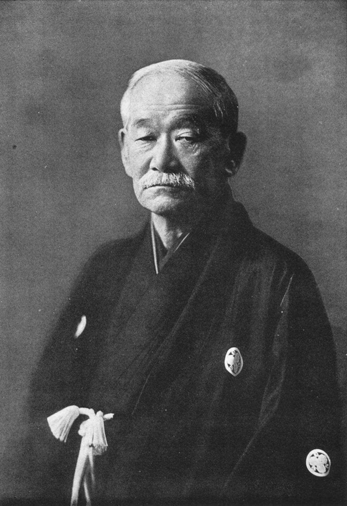

Opprinnelse
En japansk kampsport og livsfilosofi
Judo ble grunnlagt i Japan i 1882 av Jigoro Kano. Han tok de beste elementene fra de gamle jiu-jitsu-stilene og skapte en moderne idrett og disiplin bygget på respekt, selvutvikling og samarbeid. I dag er judo en olympisk idrett som utøves av millioner av mennesker i over 200 land.





Navnet judo betyr bokstavelig talt «den milde veien» — prinsippet om å bruke motstanderens kraft mot ham selv, fremfor å møte kraft med kraft.
Offisiell guide til judo